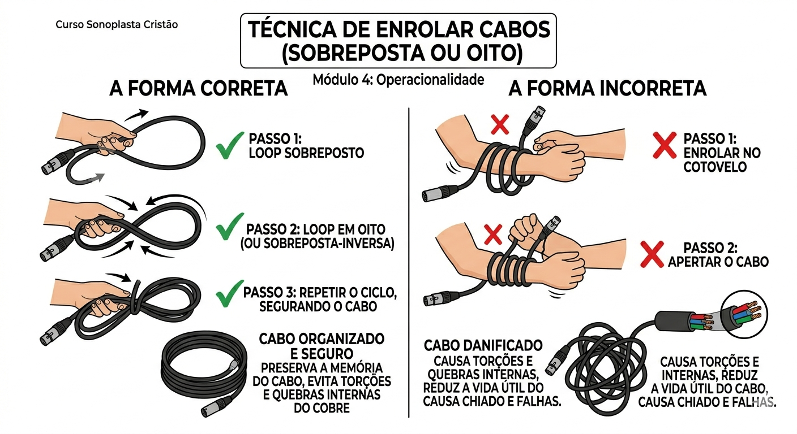

A operacionalidade é a diferença entre um som amador e um som profissional. O segredo não é apenas o equipamento, mas a sua postura e atenção.
Nunca ligue nada antes de testar a rede. Em lugares novos, use um multímetro. Verifique se a rede é 110v ou 220v. O aterramento é obrigatório: se o cantor sentir "formigamento" no microfone, pare tudo. É risco de morte.

Cabo não se enrola no cotovelo! Isso quebra os filamentos internos. Aprenda a técnica de enrolar sobreposta (em círculos ou formato de oito), respeitando a memória natural do fio.
Ambiente Fechado: O desafio é a Ressonância e a Reverberação. O som bate nas paredes e volta "atrasado", embolando tudo. Você deve atenuar (baixar) as frequências que causam eco.
Ambiente Aberto: Aqui o som "foge". Você precisa de mais pressão sonora (volume real) e cuidado redobrado com o vento, que pode carregar as frequências agudas e desequilibrar a mixagem.
Operar som é vigilância. O pregador se afasta do microfone? Você sobe o fader. Ele grita? Você desce. O músico começa um solo? Você dá destaque. Nunca tire as mãos da mesa. Se você sentou e relaxou, você não está operando, está apenas assistindo.
Para evitar o estalo (transiente) que destrói alto-falantes: Primeiro abaixe os faders e desligue as caixas/potências. Por último, desligue a mesa de som. No ligar, a ordem é inversa: Mesa primeiro, Caixas por último.